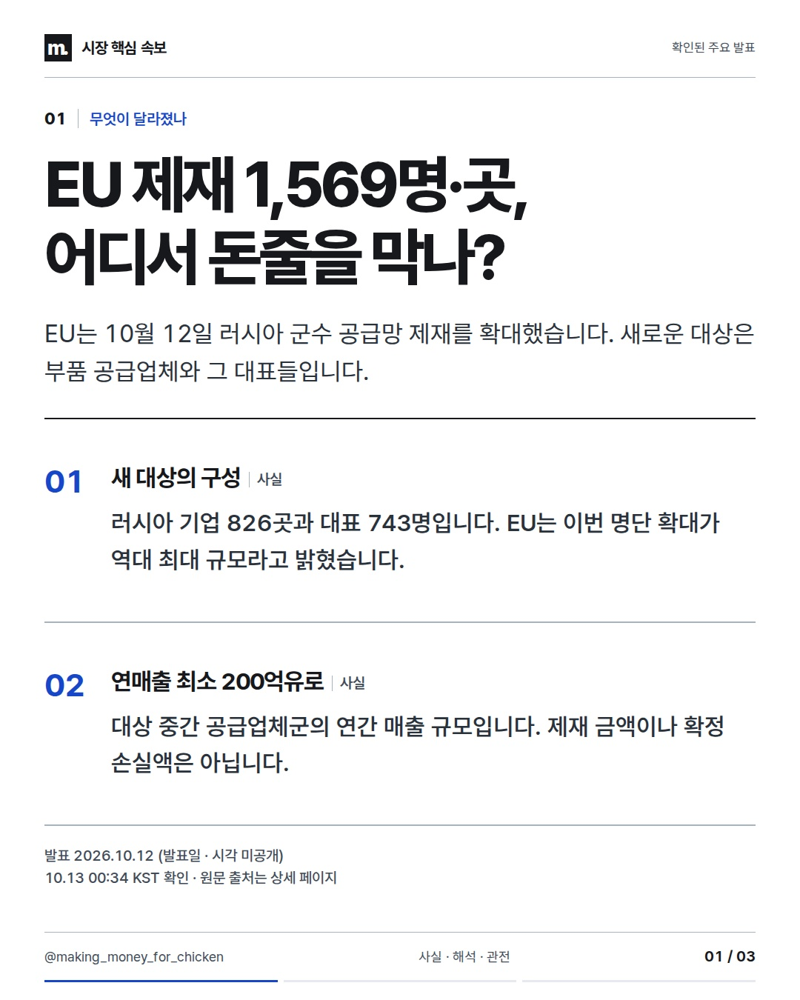
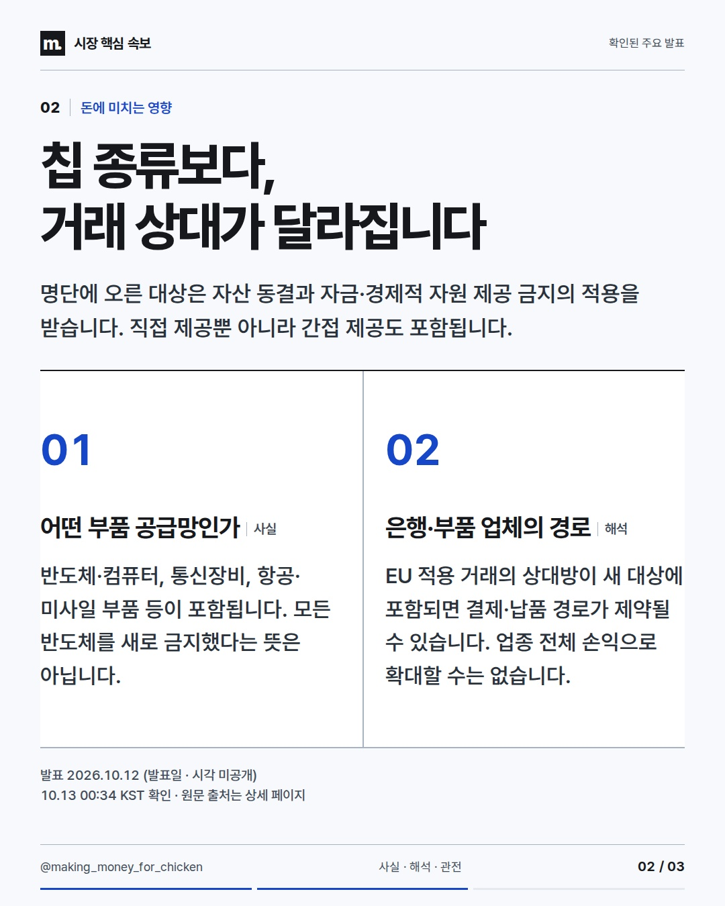
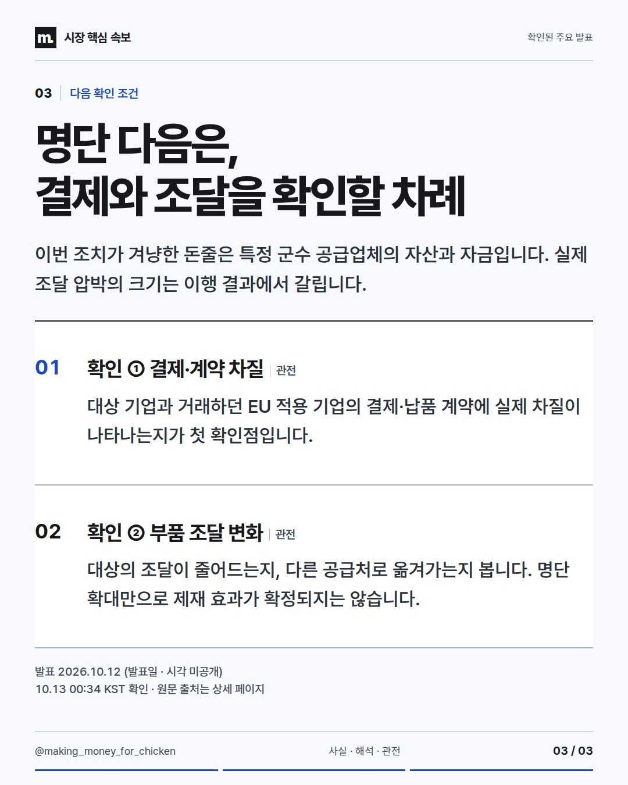

2026-10-12T15:34:01Z 확인 기준 · 발표 사실과 시장에 대한 해석을 구분합니다.
제재 명단이 길어졌다는 것보다 거래 상대가 바뀌었다는 점이 중요합니다. 칩 전체를 막는 조치와 특정 기업의 돈줄을 묶는 조치는 다릅니다. #EU제재 #공급망 #반도체



사실·해석·관전 포인트를 구분한 정보 콘텐츠. 투자 참고용 · 매수·매도 권유 아님.